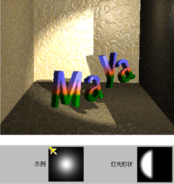
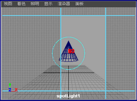
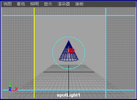
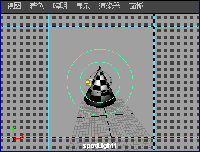
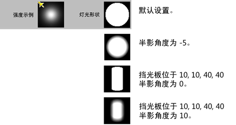

如果要创建光穿透半开的门的效果，可应用挡光板。“挡光板”(Barn Doors)是应用于聚光灯光束的快门。“挡光板”(Barn Doors)在默认情况下禁用；必须将其启用并进行调整，才能获得所需的散射光。

使用“挡光板”(Barn Doors)
- 选择已显示其操纵器的聚光灯，然后在“属性编辑器”(Attribute Editor)中启用“挡光板”(Barn Doors)。
- 在聚光灯的“属性编辑器”(Attribute Editor)的“灯光效果”(Light Effects)区域，启用“挡光板”(Barn Doors)。
- 从视图的“面板”(Panels)菜单中选择“沿选定对象观看”(Look Through Selected)，以沿选定灯光观看。（“挡光板”(Barn Doors)操纵器仅在灯光的视图中可见。）
将显示四条蓝线。这些线表示聚光灯的矩形边界。没有灯光到达蓝线边界之外的区域。

- 可以用“移动工具”(Move tool)直接操纵四条线中的每条线来移动边界。（或者，也可以在“属性编辑器”(Attribute Editor)中输入精确数值。）
将从聚光灯到蓝线边界以度为单位测量属性。例如，对于 80 度的聚光灯，如果边界恰好位于聚光灯边框上，则四条蓝线边界为 40。
在使用“挡光板”(Barn Doors)设置时，灯光形状采样将在“属性编辑器”(Attribute Editor)顶部发生更改。

- 调整半影值将显示第二个圆。在“属性编辑器”(Attribute Editor)中更改该值或单击“索引操纵器”(Index Manipulator)图标以显示和使用操纵器，然后选择“面板 > 沿选定对象观看”(Panels > Look Through Selected)以查看该圆。
两个圆之间的区域会产生较柔和的照明。

- 如果将半影值设定为 0（默认值）并启用“挡光板”(Barn Doors)，则会产生边缘非常清晰的照明。半影值为非零时，挡光板效果是平滑的场景照明。
也可以通过在聚光灯的“属性编辑器”(Attribute Editor)顶部查看“灯光形状”(Light Shape)和“强度示例”(Intensity Sample)来验证照明。在更改聚光灯的值时，这些会发生更改。

- 若要返回当前视图，请从“面板”(Panel)菜单中选择该视图。